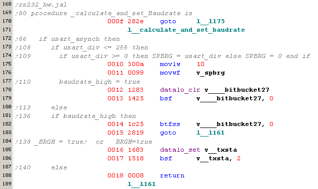

December 2005
PIC assembler viewer
Introduction
This code highlighter is mainly introduced, to view assembler listing generated by the JAL compiler.
The only special features are that you can define your own lists for syntax coloring.
Special colorcoding for this moment (between brackets the meaning for the example below):
